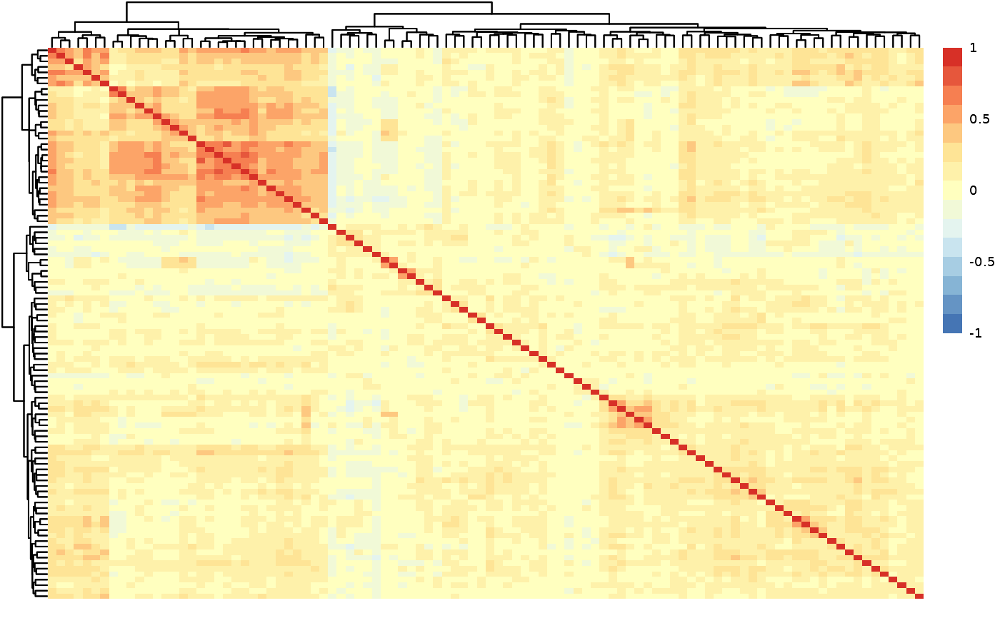

qc_summary_data() summarizes the quality control results of the input dataset.
It can handles both long and wide dataframes. The function checks the column types,
calculates the percentage of NAs in each column and row, performs a normality test,
calculates the protein-protein correlations, and creates a heatmap of the correlations.
The user can specify the reporting protein-protein correlation threshold.
Value
A list containing the following elements:
na_percentage_col: A tibble with the column names and the percentage of NAs in each column.
na_percentage_row: A tibble with the DAids and the percentage of NAs in each row.
normality_results: A tibble with the protein names, p-values, adjusted p-values, and normality status.
cor_matrix: A matrix of protein-protein correlations.
cor_results: A tibble with the filtered protein pairs and their correlation values.
heatmap: A heatmap of protein-protein correlations.
Examples
qc_res <- qc_summary_data(example_data, wide = FALSE, threshold = 0.7)

#> [1] "Summary:"
#> [1] "Note: In case of long output, only the first 10 rows are shown. To see the rest display the object with view()"
#> [1] "Number of samples: 586"
#> [1] "Number of variables: 100"
#> [1] "--------------------------------------"
#> [1] "character : 1"
#> [1] "numeric : 100"
#> [1] "--------------------------------------"
#> [1] "NA percentage in each column:"
#> # A tibble: 91 × 2
#> column na_percentage
#> <chr> <dbl>
#> 1 ACE2 6.1
#> 2 ACTA2 6.1
#> 3 ACTN4 6.1
#> 4 ADAM15 6.1
#> 5 ADAMTS16 6.1
#> 6 ADH4 6.1
#> 7 AKR1C4 6.1
#> 8 AMBN 6.1
#> 9 AMN 6.1
#> 10 AOC1 6.1
#> # ℹ 81 more rows
#> [1] "--------------------------------------"
#> [1] "NA percentage in each row:"
#> # A tibble: 144 × 2
#> DAid na_percentage
#> <chr> <dbl>
#> 1 DA00450 57.4
#> 2 DA00482 53.5
#> 3 DA00542 53.5
#> 4 DA00003 50.5
#> 5 DA00463 46.5
#> 6 DA00116 43.6
#> 7 DA00475 42.6
#> 8 DA00578 42.6
#> 9 DA00443 41.6
#> 10 DA00476 35.6
#> # ℹ 134 more rows
#> [1] "--------------------------------------"
#> [1] "Normality test results:"
#> # A tibble: 100 × 4
#> Protein p_value adj.P.Val is_normal
#> <chr> <dbl> <dbl> <lgl>
#> 1 ARID4B 2.00e-21 1.64e-19 FALSE
#> 2 ARTN 4.91e-21 1.64e-19 FALSE
#> 3 ATF2 4.01e-21 1.64e-19 FALSE
#> 4 AZU1 6.02e-20 1.51e-18 FALSE
#> 5 APBB1IP 1.64e-16 3.27e-15 FALSE
#> 6 ADA 2.81e-15 4.69e-14 FALSE
#> 7 ADCYAP1R1 5.75e-15 8.21e-14 FALSE
#> 8 AOC1 2.17e-14 2.71e-13 FALSE
#> 9 AREG 7.47e-14 8.30e-13 FALSE
#> 10 ADGRG1 1.39e-12 1.39e-11 FALSE
#> # ℹ 90 more rows
#> [1] "--------------------------------------"
#> [1] "Protein-protein correlations above 0.7:"
#> Protein1 Protein2 Correlation
#> 1 ATP5IF1 AIFM1 0.76
#> 2 AXIN1 ARHGEF12 0.76
#> 3 AIFM1 ATP5IF1 0.76
#> 4 ARHGEF12 AXIN1 0.76
#> 5 ARHGEF12 AIFM1 0.71
#> 6 AIFM1 ARHGEF12 0.71
#> [1] "--------------------------------------"
#> [1] "Correlation heatmap:"
#> [1] "--------------------------------------"